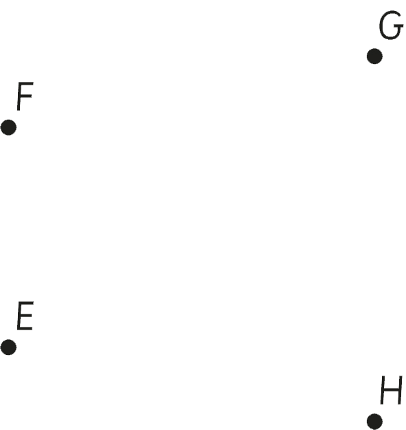

Exercise 3
1.
How many line segments are there in a triangle?
2.
Connect the points E, F, G, and H to form the following plane figures:
(a)Two triangles.
(b)Four triangles.

3.
How many line segments does a kite have?
4.
How many line segments are in the following figure?